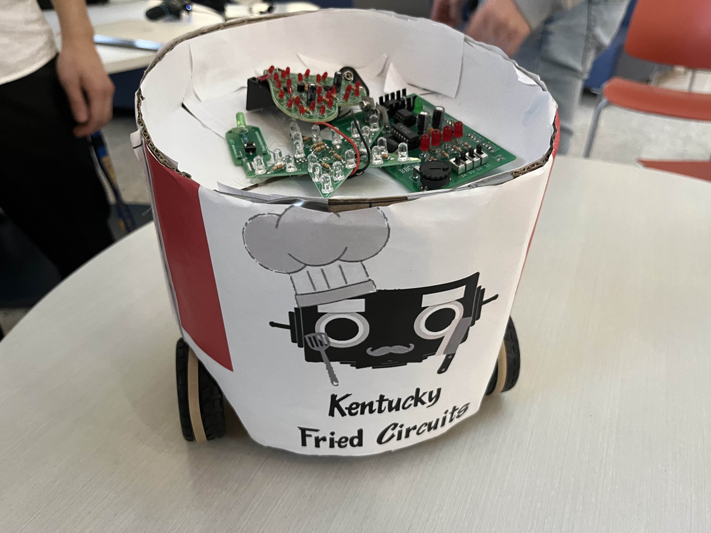
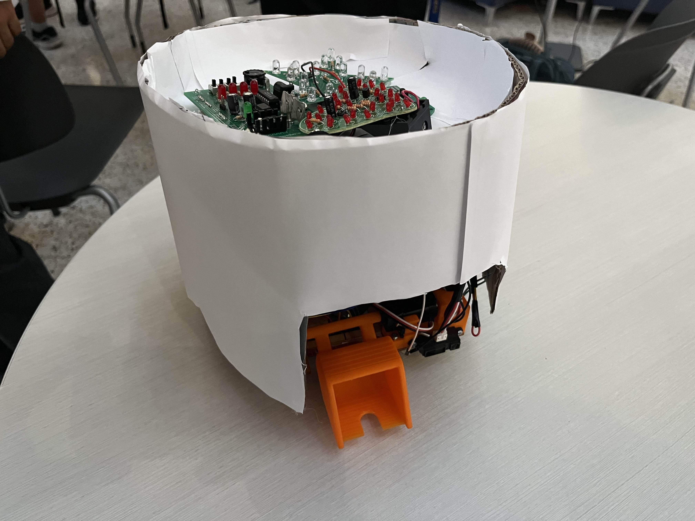

Food-themed robot powered by an ESP32 with wireless Bluetooth controls, small object acqusition mechanisim using a servo, and autonomous movements using infrared, color, and proximity sensors. Chassis and frame designed with SOLIDWORKS. Won "Best Aesthetic Award" in the 2024 Robotathon Competition.
 